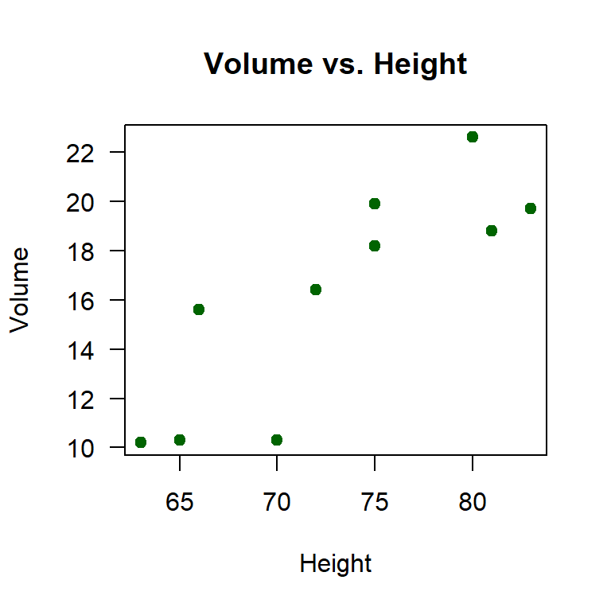
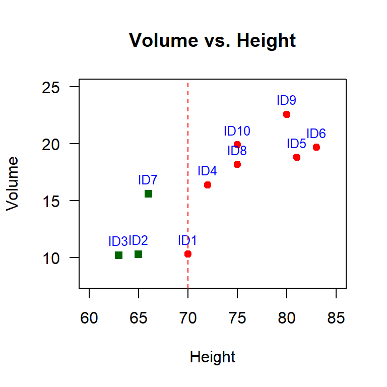
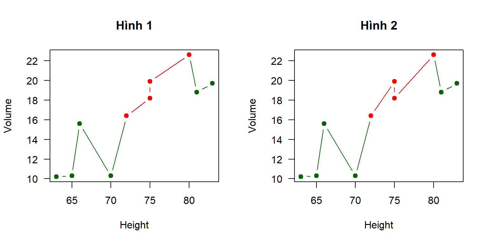
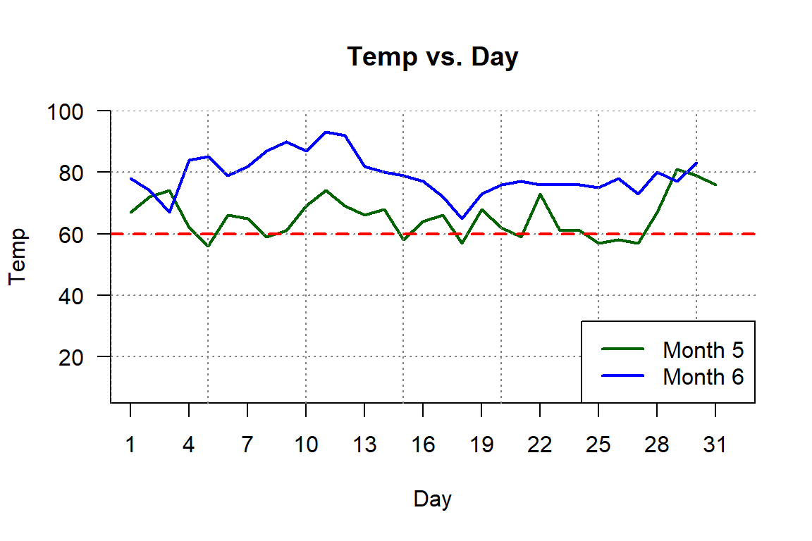
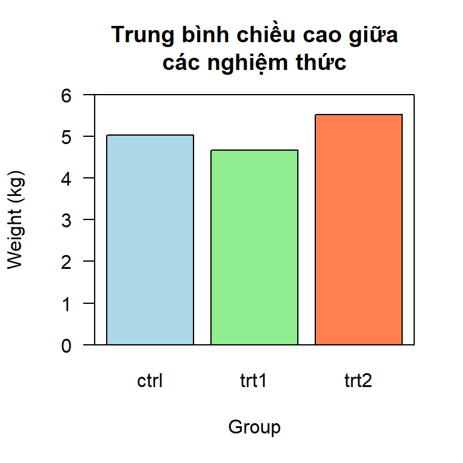
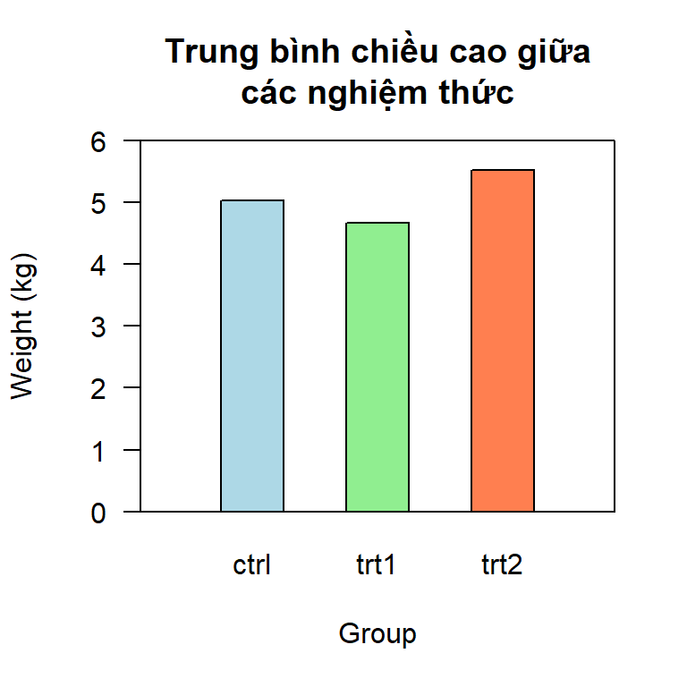
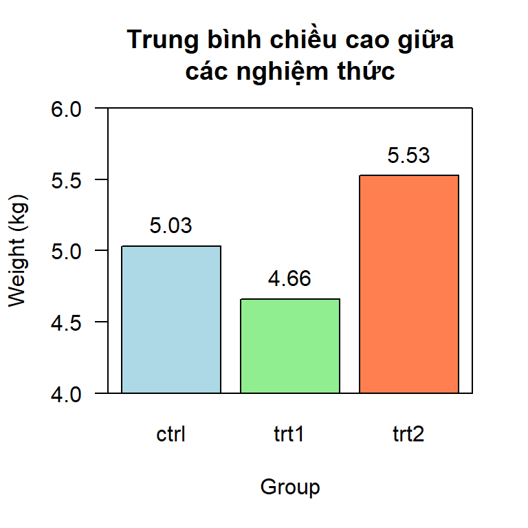
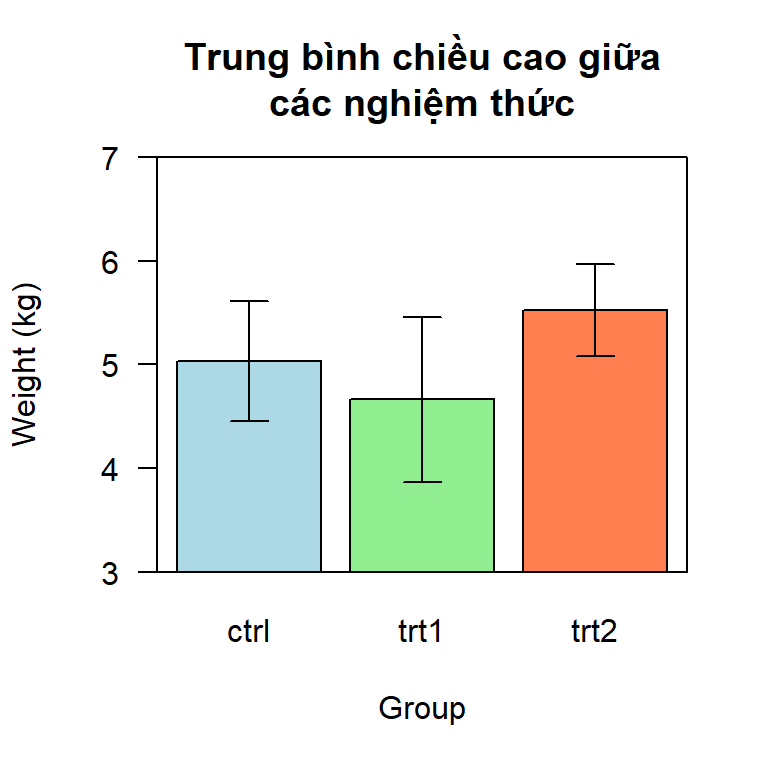

trees[1:10 , 2:3] -> df
df Height Volume
1 70 10.3
2 65 10.3
3 63 10.2
4 72 16.4
5 81 18.8
6 83 19.7
7 66 15.6
8 75 18.2
9 80 22.6
10 75 19.9Các lệnh vẽ đồ thị Base R mình có trình bày ở đây. Bài giảng
Đồ thị X-Y hay còn gọi là đồ thị scatterplot, đồ thị tán xạ biểu diễn mối quan hệ giữa hai biến liên tục. Nếu giữa các điểm không có đường nối liền ta gọi là scatterplot (đồ thị điểm), nếu các điểm có đường nối liền mạch thì là line chart (đồ thị đường).
Bạn có dữ liệu sau.
trees[1:10 , 2:3] -> df
df Height Volume
1 70 10.3
2 65 10.3
3 63 10.2
4 72 16.4
5 81 18.8
6 83 19.7
7 66 15.6
8 75 18.2
9 80 22.6
10 75 19.9Bạn hãy vẽ hình biểu diễn quan hệ giữa Height (trục X) và Volume (trục Y) như sau.

plot(Volume ~ Height,
data = df,
pch = 19,
col = "darkgreen",
las = 1,
main = "Volume vs. Height")
Tiếp tục dùng dữ liệu df, bạn hãy bổ sung thêm mã ID của các cây này. Sau đó vẽ hình như sau.
df$ID <- paste0("ID", 1:10)
df Height Volume ID
1 70 10.3 ID1
2 65 10.3 ID2
3 63 10.2 ID3
4 72 16.4 ID4
5 81 18.8 ID5
6 83 19.7 ID6
7 66 15.6 ID7
8 75 18.2 ID8
9 80 22.6 ID9
10 75 19.9 ID10Chú ý là ta sẽ tô màu đỏ cho những cây có chiều cao >= 70 và màu xanh lá cây cho những cây có chiều cao < 70.

Ta cần tạo một cột group để định vị cho R biết cách tô màu theo điều kiện.
df$group <- ifelse(test = df$Height >= 70,
yes = "high",
no = "low")
df$group <- factor(df$group,
levels = c("low", "high"))
df Height Volume ID group
1 70 10.3 ID1 high
2 65 10.3 ID2 low
3 63 10.2 ID3 low
4 72 16.4 ID4 high
5 81 18.8 ID5 high
6 83 19.7 ID6 high
7 66 15.6 ID7 low
8 75 18.2 ID8 high
9 80 22.6 ID9 high
10 75 19.9 ID10 highplot(Volume ~ Height,
data = df,
pch = c(15, 19)[df$group],
col = c("darkgreen", "red")[df$group],
las = 1,
xlim = c(60, 85),
ylim = c(8, 25),
main = "Volume vs. Height")
text(x = df$Height,
y = df$Volume,
labels = df$ID,
pos = 3,
cex = 0.8,
col = "blue")
abline(v = 70,
lty = 2,
col = "red")
Bạn tiếp tục dùng dữ liệu df, bạn hãy vẽ hình linechart như sau.
Gợi ý: Bạn cần sắp xếp thứ tự trục X để R biết cách nối giữa các điểm dữ liệu. Đồng thời ta chú ý khi cùng giá trị Height = 75 thì sẽ có 2 giá trị Volume khác nhau, dẫn đến ta có thể ra 2 dạng plot khác nhau một chút.
trees[1:10 , 2:3] -> df
df Height Volume
1 70 10.3
2 65 10.3
3 63 10.2
4 72 16.4
5 81 18.8
6 83 19.7
7 66 15.6
8 75 18.2
9 80 22.6
10 75 19.9Bạn hãy vẽ hình biểu diễn quan hệ giữa Height (trục X) và Volume (trục Y) như sau.

library(dplyr)
df |> dplyr:::arrange(Height, Volume) -> df1
df1 Height Volume
1 63 10.2
2 65 10.3
3 66 15.6
4 70 10.3
5 72 16.4
6 75 18.2
7 75 19.9
8 80 22.6
9 81 18.8
10 83 19.7par(mfrow = c(1,2))
library(dplyr)
df |> dplyr:::arrange(Height, desc(Volume)) -> df2
df2 Height Volume
1 63 10.2
2 65 10.3
3 66 15.6
4 70 10.3
5 72 16.4
6 75 19.9
7 75 18.2
8 80 22.6
9 81 18.8
10 83 19.7plot(Volume ~ Height,
type = "b",
data = df1,
pch = 19,
col = "darkgreen",
las = 1,
main = "Hình 1")
points(Volume ~ Height,
type = "b",
data = df1[5:8, ],
pch = 19,
col = "red",
las = 1,
main = "Hình 1")
plot(Volume ~ Height,
type = "b",
data = df2,
pch = 19,
col = "darkgreen",
las = 1,
main = "Hình 2")
points(Volume ~ Height,
type = "b",
data = df2[5:8, ],
pch = 19,
col = "red",
las = 1,
main = "Hình 2")
Sử dụng dataset airquality để vẽ hai đường linechart so sánh nhiệt độ giữa hai tháng.
df5 <- airquality[ , 4:6] |> subset(Month %in% c(5))
row.names(df5) <- NULL
df5 Temp Month Day
1 67 5 1
2 72 5 2
3 74 5 3
4 62 5 4
5 56 5 5
6 66 5 6
7 65 5 7
8 59 5 8
9 61 5 9
10 69 5 10
11 74 5 11
12 69 5 12
13 66 5 13
14 68 5 14
15 58 5 15
16 64 5 16
17 66 5 17
18 57 5 18
19 68 5 19
20 62 5 20
21 59 5 21
22 73 5 22
23 61 5 23
24 61 5 24
25 57 5 25
26 58 5 26
27 57 5 27
28 67 5 28
29 81 5 29
30 79 5 30
31 76 5 31df6 <- airquality[ , 4:6] |> subset(Month %in% c(6))
row.names(df6) <- NULL
df6 Temp Month Day
1 78 6 1
2 74 6 2
3 67 6 3
4 84 6 4
5 85 6 5
6 79 6 6
7 82 6 7
8 87 6 8
9 90 6 9
10 87 6 10
11 93 6 11
12 92 6 12
13 82 6 13
14 80 6 14
15 79 6 15
16 77 6 16
17 72 6 17
18 65 6 18
19 73 6 19
20 76 6 20
21 77 6 21
22 76 6 22
23 76 6 23
24 76 6 24
25 75 6 25
26 78 6 26
27 73 6 27
28 80 6 28
29 77 6 29
30 83 6 30
plot(Temp ~ Day,
type = "l",
data = df5,
pch = 19,
col = "darkgreen",
lwd = 2,
las = 1,
main = "Temp vs. Day",
xlim = c(0, 33),
ylim = c(5, 100),
xaxs = "i",
yaxs = "i",
axes = F,
bty = "l")
points(Temp ~ Day,
type = "l",
data = df6,
pch = 19,
lwd = 2,
col = "blue")
axis(side = 1,
at = seq(from = 1,
to = 31,
by = 3))
axis(side = 2,
las = 2)
box(bty = "l")
grid(col = "gray50")
legend(x = "bottomright",
y = NULL,
legend = c("Month 5",
"Month 6"),
col = c("darkgreen", "blue"),
lwd = 2,
lty = 1)
abline(h = 60,
col = "red",
lty = 2,
lwd = 2)
Đồ thị cột thường để biểu diễn về mặt khối lượng (quantity) khi so sánh giữa các nhóm với nhau, ta có trục X là biến phân loại, trục Y là biến liên tục.
Sử dụng dữ liệu PlantGrowth, ta có kết quả trung bình chiều cao cây của 3 nghiệm thức như sau:
library(dplyr)
PlantGrowth |> dplyr:::group_by(group) |>
dplyr:::summarise(mean_weight = mean(weight)) |> as.data.frame() -> df
df group mean_weight
1 ctrl 5.032
2 trt1 4.661
3 trt2 5.526Bạn hãy vẽ hình so sánh trung bình chiều cao cây giữa 3 nghiệm thức.

a <- barplot(mean_weight ~ group,
data = df,
col = c("lightblue", "lightgreen", "coral"),
xlab = "Group",
ylab = "Weight (kg)",
ylim = c(0, 6),
# xlim = c(0.064 , 3.736),
las = 1,
main = "Trung bình chiều cao giữa\ncác nghiệm thức")
# tọa độ x0-x1, y0-y1 của đồ thị
par("usr")[1] 0.064 3.736 0.000 6.000# định vị tọa độ theo trục X của các cột
a [,1]
[1,] 0.7
[2,] 1.9
[3,] 3.1box()
Trên cơ sở hình 2.1, bạn hãy thay đổi chiều rộng của cột để nhìn cân đối hơn, như hình bên dưới
library(dplyr)
PlantGrowth |> dplyr:::group_by(group) |>
dplyr:::summarise(mean_weight = mean(weight)) |> as.data.frame() -> df
df group mean_weight
1 ctrl 5.032
2 trt1 4.661
3 trt2 5.526
Ta sử dụng tham số space để tùy chỉnh độ rộng cột, tham số width cũng có thể dùng để tùy chỉnh độ rộng cột, tuy nhiên không thuận tiện bằng space. Ta kiểm tra sự thay đổi vị trí của cột so với tọa độ đồ thị. (tham số par("usr") và kết quả tọa độ trong đối tượng a.)
a <- barplot(mean_weight ~ group,
data = df,
col = c("lightblue", "lightgreen", "coral"),
xlab = "Group",
ylab = "Weight (kg)",
ylim = c(0, 6),
las = 1,
width = 1,
space = 1,
# set tham số xlim để chủ động sắp xếp cột nằm ở giữa plot
# để biết xlim nên set như thế nào, ta cần đối chiếu kết quả
# tọa độ từ lệnh par("usr")
xlim = c(0,7),
main = "Trung bình chiều cao giữa\ncác nghiệm thức")
par("usr")[1] -0.28 7.28 0.00 6.00a [,1]
[1,] 1.5
[2,] 3.5
[3,] 5.5box()
library(dplyr)
PlantGrowth |> dplyr:::group_by(group) |>
dplyr:::summarise(mean_weight = mean(weight)) |> as.data.frame() -> df
df group mean_weight
1 ctrl 5.032
2 trt1 4.661
3 trt2 5.526Ta thấy các nghiệm thức dao động trong khoảng 4 đến 6. Hãy vẽ đồ thị cột có phần limit của trục Y bắt đầu từ 4, để làm rõ được độ chênh lệch giữa các cột này. Bạn thêm kết quả mean xuất hiện trên đầu mỗi cột luôn nha.

Trong Base R, ta có lệnh par(xpd = FALSE) để không vẽ lấn qua vùng đồ thị, tuy nhiên tham số xpd này ta sẽ set trực tiếp trong lệnh barplot sẽ hiệu quả. Ngoài ra có thể dùng lệnh clip() để định vị vùng đồ thị cần vẽ (theo ý nghĩa như cropping hình).
a <- barplot(mean_weight ~ group,
data = df,
col = c("lightblue", "lightgreen", "coral"),
xlab = "Group",
ylab = "Weight (kg)",
ylim = c(4, 6),
las = 1,
main = "Trung bình chiều cao giữa\ncác nghiệm thức",
xpd = F) # tham số xpd giúp cho R không vẽ lấn qua plot region
box()
text(x = a,
y = df$mean_weight,
labels = round(df$mean_weight, 2),
pos = 3)
library(dplyr)
PlantGrowth |> dplyr:::group_by(group) |>
dplyr:::summarise(mean_weight = mean(weight),
sd_weight = sd(weight)) |> as.data.frame() -> df
df group mean_weight sd_weight
1 ctrl 5.032 0.5830914
2 trt1 4.661 0.7936757
3 trt2 5.526 0.4425733Bạn hãy vẽ hình đồ thị cột có thêm khoảng dao động SD như sau.

Trong Base R, ta có lệnh par(xpd = FALSE) để không vẽ lấn qua vùng đồ thị, tuy nhiên tham số xpd này ta sẽ set trực tiếp trong lệnh barplot sẽ hiệu quả. Ngoài ra có thể dùng lệnh clip() để định vị vùng đồ thị cần vẽ (theo ý nghĩa như cropping hình).
a <- barplot(mean_weight ~ group,
data = df,
col = c("lightblue", "lightgreen", "coral"),
xlab = "Group",
ylab = "Weight (kg)",
ylim = c(3, 7),
las = 1,
main = "Trung bình chiều cao giữa\ncác nghiệm thức",
xpd = F)
box()
a # ta định vị tọa độ các cột [,1]
[1,] 0.7
[2,] 1.9
[3,] 3.1arrows(x0 = a,
x1 = a,
y0 = df$mean_weight - df$sd_weight,
y1 = df$mean_weight + df$sd_weight,
code = 3,
angle = 90,
length = 0.1,
lwd = 1)
https://www.statscodes.com/plots-and-charts/